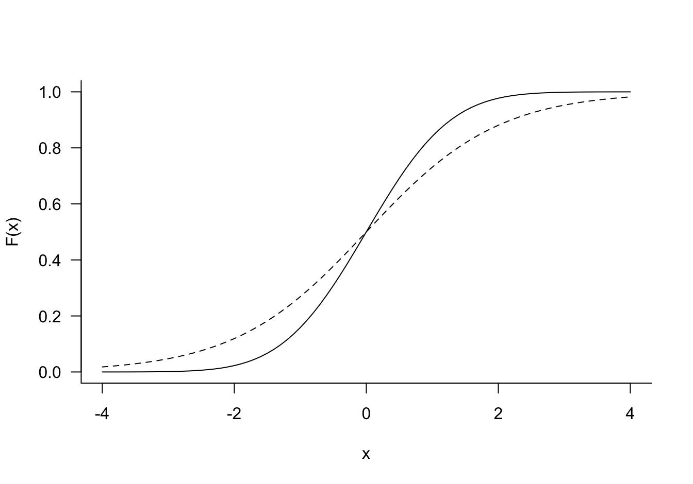
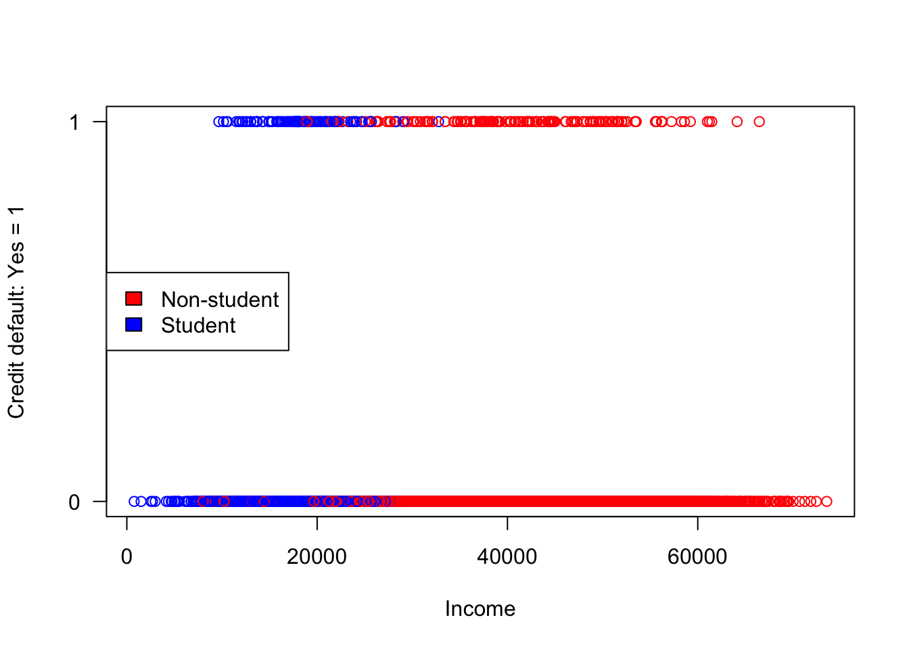
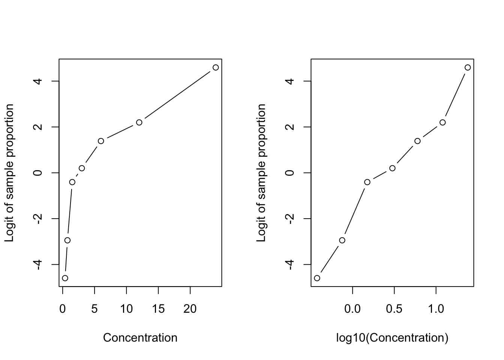
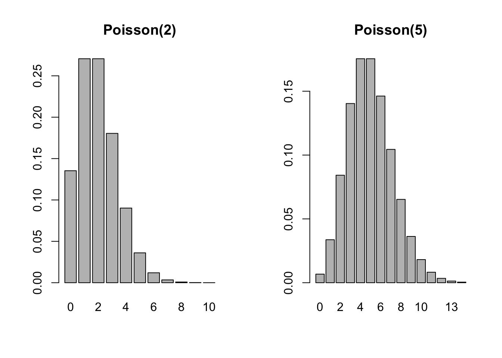
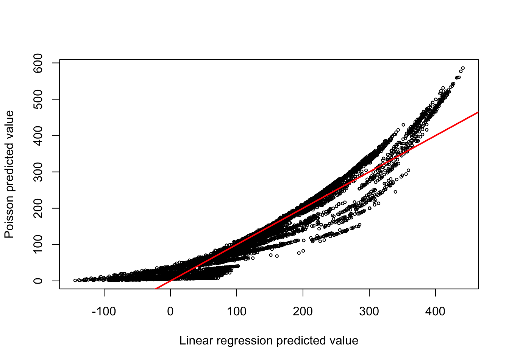

10 Discrete Target Variables
10.1 Introduction
The classical linear model (Chapter 7) is appropriate when the mean function is linear in the parameters and the errors are uncorrelated with constant variance. The error conditions are met in a random sample from a Gaussian distribution. It does not take much to shake the foundation of the classical model. For example, when the target variable is the time until a manufactured item fails, the exponential or Weibull distribution is more appropriate than the Gaussian and the assumption of constant variance no longer holds. A characteristic of these distributions is a dependence of the variance on the mean. A random variable \(Y\) has an exponential distribution if its density function is given by \[ f(y) = \left \{ \begin{array}{ll}\lambda e^{-\lambda y} & y \ge 0 \\ 0 & y < 0 \end{array} \right . \] The mean and variance are \(\text{E}[Y] = 1/\lambda\) and \(\text{Var}[Y] = 1/\lambda^2 = 1/\text{E}[Y]^2\). If the mean changes, for example as a function of inputs, the variance will change as well.
Also, the support of the exponential random variable is different from the Gaussian. The former takes on non-negative values (the time lapsed between telephone calls cannot be negative) whereas the Gaussian takes on values from \(-\infty\) to \(+\infty\). A linear model for the mean function is probably a bad idea because there is no guarantee that predicted values \(\widehat{y} = \textbf{x}^\prime \widehat{\boldsymbol{\beta}}\) are non-negative. To ensure that predicted values comply with the support of the random variable, a transformation such as \[ \widehat{y} = \exp\{ \textbf{x}^\prime \widehat{\boldsymbol{\beta}} \} \] might be useful. The linear predictor \(\widehat{\eta} = \textbf{x}^\prime\widehat{\boldsymbol{\beta}}\) can now take on values between \(-\infty\) and \(+\infty\) and the predicted values obey \(\widehat{y} \ge 0\). But the exponential transformation made the model for the mean nonlinear in the parameters. By considering a different distribution for the target variable, the classical linear model framework breaks down quickly–even for a continuous random variable like the time between some events.
When the target variable is discrete–rather than continuous–the linear model breaks down in the same way, the consequences for sticking with the classical linear model framework are more severe, however.
Recall from Section 1.2.0.4 that target variables are categorized as continuous or discrete depending on whether the number of possible values is countable. Discrete variables, with countable support, are further categorized into count variables and categorical variables. The value of a count variable is an integer that indicates how many times something occurred. The value of a categorical variable is a label that describes a state. For example, the number of vehicle accidents per hour is a count variable, the make of the vehicle involved in the accidents is a categorical variable.
In this chapter we consider regression models for discrete random variables: binary variables that take on two values, ordinal and nominal variables that take on more than two values and true count variables. The discussion will be somewhat informal. The models will be re-introduced and discussed more formally in a later chapter under the umbrella of generalized linear models (GLMs, Chapter 27).
How does the failure time example in this introduction relate to modeling discrete targets? If the time between events has an exponential distribution, the number of events that occur within a unit of time–a count variable–has a Poisson distribution. Both distributions are members of a special family of probability distributions, known as the exponential family. GLMs are statistical models for target variables that have a distribution in the exponential family—more details in Section 27.2.
Caution
Do not confuse the exponential distribution with the exponential family of distributions.
The term exponential in the family of distributions comes from a particular way of writing the mass or density function, using exponentiation, see Section 27.2. Many distributions can be written that way, including the exponential density shown earlier. The exponential distribution is one member of the exponential family, other members include the Binary, Binomial, Negative Binomial, Poisson, Gaussian, Beta, and Gamma distributions.
10.2 Modeling Binary Data
A categorical variable is called binary if it takes on two possible values. The two states (or classes) are sometimes referred to as “success” and “failure”, we prefer to use the generic terms “event” and “non-event”. When modeling the recurrence of cancer, it is best not to refer to the event being modeled as a “success”. The states are coded numerically as \((1,0)\) or \((-1,1)\). The former is common in regression modeling and the state coded as 1 is the event of interest. Coding the states as \(-1\) and \(1\) can be useful in classification models.
A binary random variable takes on the values 1 and 0 with probabilities \(\pi\) and \(1-\pi\), respectively. The probability mass function can be written conveniently as \[ \Pr(Y=y) = \pi^y \, (1-\pi)^{(1-y)} \]
It is easy to show that \(\text{E}[Y] = \pi\) and \(\text{Var}[Y] = \pi(1-\pi)\). The model for the mean function of a binary target variable must be suitable for a probability. If the model has a linear predictor component \(\eta = \textbf{x}^\prime\boldsymbol{\beta}\), some transformation is needed to map between \[-\infty < \eta < \infty\] and \[0 \le \pi \le 1\]
This transformation, when applied to the mean, is called the link function. The inverse transformation, the inverse link function, is applied to the linear predictor
\[\begin{align*} g(\pi) &= \eta \\ \pi &= g^{-1}(\eta) \end{align*}\]
Logistic Regression
Where do we find functions that can be used as link/inverse link functions? One place to look are the cumulative distribution functions of random variables that are defined on \(-\infty < x < \infty\). For example, take the c.d.f. of the logistic distribution \[F(x) = \Pr(X \le x) = \frac{1}{1-\exp\{-(x-\mu)/\phi\}} \quad -\infty < x < \infty\]
\(\mu\) and \(\phi\) are the mean and scale parameter of the logistic distribution. The standard logistic has \(\mu=0\) and \(\sigma=1\) and c.d.f. \[ F(x) = \frac{1}{1+e^{-x}} \] The inverse operation, to compute the value of \(x\) associated with a cumulative probability \(p\), is the quantile function. For the standard logistic distribution the quantile function is \[ Q(p) = \log \left(\frac{p}{1-p} \right) \] This quantile function is known as the logit.
Definition: Logistic Regression
A logistic regression model is a generalized linear model for Binary data with linear predictor \(\eta = \textbf{x}^\prime \boldsymbol{\beta}\) and logit link function \[ \log\left(\frac{\text{E}[Y|\textbf{x}]}{1-\text{E}[Y|\textbf{x}]} \right) = \eta = \textbf{x}^\prime\boldsymbol{\beta} \] \[ \text{E}[Y|\textbf{x}] = \frac{1}{1+\exp\{-\eta\}}=\frac{1}{1+\exp\{-\textbf{x}^\prime\boldsymbol{\beta}\}} \]
The logit link function is a convenient choice for modeling binary data, it is symmetric about zero, has a simple expression and its inverse can be computed easily. With a logit link the coefficients have a simple and appealing interpretation in terms of log odds ratios (see below). Many other functions could serve as link functions. For example, if \(\phi(x)\) is the c.d.f. of a standard Gaussian random variable, the quantile function \(\phi^{-1}(p)\) can be used as a link function. This configuration is called **probit* regression. Logistic and Gaussian c.d.f. and quantile function have similar shapes (Figure 10.1), computations of the Gaussian probabilities and quantiles is numerically much more involved, requiring approximations.
Note
The term logistic regression is often used for any general linear model for binary data, regardless of which link function is used. Other link functions than the logit and probit you might encounter are the log-log and complementary log-log links. These are similar in shape to the logit link but are not symmetric about zero.
Example: Credit Default–ISLR
The Default data is part of the ISLR2 library (James et al. 2021), a simulated data set with ten thousand observations. The target variable is default, whether a customer defaulted on their credit card debt. Input variables include a factor that indicates student status, account balance and income information.
library(ISLR2)
head(Default) default student balance income
1 No No 729.5265 44361.625
2 No Yes 817.1804 12106.135
3 No No 1073.5492 31767.139
4 No No 529.2506 35704.494
5 No No 785.6559 38463.496
6 No Yes 919.5885 7491.559The default target variable is a factor. It can be passed directly to the glm function, which models the first level of the factor as the non-event and all other levels are considered events. It is thus important to know how the factor levels are ordered:
str(Default$default) Factor w/ 2 levels "No","Yes": 1 1 1 1 1 1 1 1 1 1 ...If you wish to work with the underlying values of the factor, use the unclass function:
unique(unclass(Default$default))[1] 1 2Next, we split the data into a train and test data set using a 90:10 split.
set.seed(765)
n <- nrow(Default)
testset <- sort(sample(n,n*0.1))
test <- Default[testset,]
train <- Default[-testset,]
nrow(train)[1] 9000nrow(test)[1] 1000Working with binary data is easier in some ways compared to continuous response data and trickier in other ways. The following plot shows the responses (coded Default=1, non-Default=0) against the income input.
plot(train$income,
ifelse(train$default=="No",0,1),
ylim=c(0,1),
ylab="Credit default: Yes = 1",
xlab="Income",
col=c("red","blue")[unclass(train$student)],yaxt="n")
axis(2, at = seq(0, 1, by = 1), las=2)
legend("left",legend=c("Non-student","Student"),fill=c("red","blue"))
What do we learn from this plot? Students have lower incomes that non-students but are students more likely to default on credit card debt? It is difficult to discern too much from a plot that shows only two response values.
x <- table(Student=Default$student,Default=Default$default)
x Default
Student No Yes
No 6850 206
Yes 2817 127Cross-tabulating student status and default status shows that the proportion of defaults is higher among students (0.0431) than among non-students (0.0292).
The logistic regression of default on all input variables is performed with the glm function in R.
log_reg <- glm(default ~ ., data=train, family=binomial)
summary(log_reg)
Call:
glm(formula = default ~ ., family = binomial, data = train)
Coefficients:
Estimate Std. Error z value Pr(>|z|)
(Intercept) -1.106e+01 5.252e-01 -21.060 <2e-16 ***
studentYes -6.098e-01 2.530e-01 -2.410 0.016 *
balance 5.811e-03 2.491e-04 23.323 <2e-16 ***
income 5.038e-06 8.731e-06 0.577 0.564
---
Signif. codes: 0 '***' 0.001 '**' 0.01 '*' 0.05 '.' 0.1 ' ' 1
(Dispersion parameter for binomial family taken to be 1)
Null deviance: 2617.1 on 8999 degrees of freedom
Residual deviance: 1398.0 on 8996 degrees of freedom
AIC: 1406
Number of Fisher Scoring iterations: 8The Binary distribution is a special case of the Binomial distribution: the sum of \(n\) independent Bernoulli(\(\pi\)) experiments is a Binomial(\(n,\pi\)) random variable. family=binomial covers both Binary and Binomial cases. The default link function for the binomial family in R is the logit. A probit regression would use family=binomial(link="probit").
How do we use the coefficients in the output to make predictions? Consider a student with $20,000 income and a credit card balance of $1,500. How likely are they to default?
new_x <- data.frame(student="Yes",balance=1500,income=20000)
pred_linp <- predict(log_reg,newdata=new_x,type="link")
pred_mean <- predict(log_reg,newdata=new_x,type="response")
cat("Predicted linear predictor :", pred_linp)Predicted linear predictor : -2.852752cat("Predicted probability to default: ", pred_mean)Predicted probability to default: 0.05453925The predict function for a generalized linear model takes a type= argument that determines the kind of prediction. The default is type="link" for a prediction on the scale of the linear predictor: \(\widehat{\eta} = \textbf{x}^\prime\widehat{\boldsymbol{\beta}}\). To obtain a prediction on the inverse link scale, the scale of the mean response, use type="response". The following calculations verify:
linp = coef(log_reg)[1] + coef(log_reg)[2] + 1500*coef(log_reg)[3] +
20000*coef(log_reg)[4]
prob = 1 / (1+exp(-linp))
cat("Predicted linear predictor :", linp)Predicted linear predictor : -2.852752cat("Predicted probability to default: ", prob)Predicted probability to default: 0.05453925The predicted proportion of students with an account balance of $1,500 and an income of $20,000 is {r}round(prob,5).
Caution
It is easy to forget for which scale predictions are calculated–different software implementations have different defaults. In the previous example it was obvious that the negative value -2.8528 is not estimating a probability. How about the following prediction?
predict(log_reg,newdata=data.frame(student="No",balance=2000,income=20000)) 1
0.6623438 Interpretation
The sign of the coefficient tells us whether the predicted probability increases. It is important to check which of the two binary states is being modeled. If the target variable is a factor, glm in R models the second level of the factor–default="Yes" in our example. The probability of credit card default thus increases with account balance and income and is lower if student = "Yes compared to student = "No".
In the classical linear model the coefficients measure the change in the mean response if the associated input variable increases in value by one unit and all other inputs are held constant. In the logistic regression model, because of the involvement of the link function, such an interpretation applies to the link scale. In other words, the coefficient \(\widehat{\beta}_2 =\) 0.0058 for balance measures the change in logits when the account balance increases by one dollar. Because the logistic function is nonlinear the effect of an input on the predicted mean, the probability to default, is also nonlinear. The effect of \(\beta_j\) on the probability is greater when the linear predictor is near zero where the logistic function has the greatest slope.
The odds \(O(\eta)\) are defined as the ratio of event and non-events for the value of the linear predictor: \[ O(\eta) = \frac{\pi(\eta)}{1-\pi(\eta)} = e^\eta \] The odds ratio compares the odds for two different linear predictors \[ OR(\eta_1,\eta_2) = \frac{O(\eta_1)}{O(\eta_2)}=\exp\{\eta_1 - \eta_2\} \] \(OR(\eta_1,\eta_2)\) measures how much the odds have changed from \(\eta_1\) to \(\eta_2\). These comparisons are particularly meaningful if the linear predictors differ in an effect we wish to test. For example, if \(\eta_1\) is the linear predictor for a student and \(\eta_2\) is the linear predictor for a student (with the same income and account balance), then exponentiating $_2 = $ 0.0058 gives the odds ratio for student status.
We have finally established that the logistic regression coefficients are interpreted as changes in the log odds ratios–this holds only for the logit link.
From Regression to Classification
Classification methods assign observations to categories. Any statistical method that yields probabilities can be used as a classifier. The difference between the two is in the statements
The predicted probability of a student with $x account balance and $xx income to default is …
A student with $x account balance and $xx income to default is classified as a (non-)defaulter
All we need to turn the predictions from a logistic regression model into a classification model is a rule that assigns predictions to events or non-events based on the predicted probabilities. The cutoff \(c = 0.5\) is common and is known as the Bayes classifier. If a predicted probability is greater than 0.5 it is classified as an event, otherwise it is classified as a non-event. Classification models are explored in much more detail in the next part of the material.
The results of a binary classification are displayed in a 2 x 2 table, called the confusion matrix. It compares the observed and predicted categories. The cells of the matrix contain the number of data points that fall into the cross-classification when the decision rule is applied to \(n\) observations. If one of the categories is labeled positive and the other is labeled negative, the cells give the number of true positive (TP), true negative (TN), false positive (FP), and false negative (FN) predictions.
| Observed Category | ||
|---|---|---|
| Predicted Category | Yes (Positive) | No (Negative) |
| Yes (Positive) | True Positive (TP) | False Positive (FP) |
| No (Negative) | False Negative (FN) | True Negative (TN) |
Given the counts in the four cells, we can calculate a number of statistics (Table 10.1). A more in-depth look at confusion statistics follows in Section 12.4.
| Statistic | Calculation | Notes |
|---|---|---|
| Sensitivity | TP / (TP + FN) | This is the true positive rate; also called Recall |
| Specificity | TN / (FP + TN) | This is the true negative rate |
| Accuracy | (TP + TN) / (TP + TN + FP + FN) | Overall proportion of correct classifications |
| Misclassification rate | (FP + FN) / (TP + TN + FP + FN) | Overall proportion of incorrect classifications, 1 – Accuracy |
| Precision | TP / (TP + FP) | Ratio of true positives to anything predicted as positive |
The model accuracy is measured by the ratio of observations that were correctly classified, the sum of the diagonal cells divided by the total number of observations. The misclassification rate, another common performance measure is the complement of the accuracy.
The sensitivity is the ratio of true positives to what should have been predicted as positive. The specificity is the ratio of true negatives to what should have been predicted as negative. Note that these are are not complements of each other; they are calculated with different denominators.
Example: Credit Default–ISLR (Cont’d)
With the logistic regression model fitted to the training data we can compute the confusion matrix for the test data. If the application of the logistic regression is classification, metrics based on confusion statistics for test data are a good method for judging the performance of the model.
The following statements apply the Bayes classification rule to the test data and call the confusionMatrix function in the caret package. The option positive="Yes" is used to identify the level of the factor considers the “positive” level for the calculation of the statistics. This will not affect the overall confusion matrix but will affect the interpretation of sensitivity, specificity and others. By default, the function uses the first level of a factor as the “positive” result.
predicted_prob_test <- predict(log_reg, newdata=test, type="response")
classify_test <- as.factor(ifelse(predicted_prob_test > 0.5,"Yes","No"))
caret::confusionMatrix(classify_test,test$default, positive="Yes")Confusion Matrix and Statistics
Reference
Prediction No Yes
No 958 26
Yes 7 9
Accuracy : 0.967
95% CI : (0.954, 0.9772)
No Information Rate : 0.965
P-Value [Acc > NIR] : 0.407906
Kappa : 0.3384
Mcnemar's Test P-Value : 0.001728
Sensitivity : 0.2571
Specificity : 0.9927
Pos Pred Value : 0.5625
Neg Pred Value : 0.9736
Prevalence : 0.0350
Detection Rate : 0.0090
Detection Prevalence : 0.0160
Balanced Accuracy : 0.6249
'Positive' Class : Yes
The classification has an accuracy of 96.7%, which seems impressive. But consider that the proportion of observations in the larger observed class is (958 + 7)/1,000 = 0.965. If you were to take a naïve approach and predict all observations as “No” without looking at the data, that decision rule would have an accuracy of 96.5%. In light of this, using tree inputs has not much approved the quality of the model.
The model is very sensitive, but not specific. It is much less likely to predict a “Yes” when the true state is “No”, than it is to predict a “No” when the true state is “Yes”. Whether we can accept a model with a sensitivity of only 25.71% is questionable, despite its high accuracy. An evaluation of this model should consider whether the two errors, false positive and false negative predictions, are of equal importance and consequence.
We will revisit decision rules for these data in Chapter 13.
10.3 Modeling Counts
Count targets, where the possible values of the response variables are countable, \(0, 1, 2, \cdots\), arise in many situations. Two situations, which reflect different distributional properties, are
Counts out of a total. We are counting the number of event occurrences out of a total number of experiments. The support for these counts has an upper limit and the counts can be expressed as proportions. For example, the number of defective manufactured items out of 100 items has support\(\{0,1,2,\cdots,100\}\).
Counts per unit. We are counting how many times an event of interest occurs per day, per square foot, or per some other units. The counts cannot be converted to proportions and they depend on the unit of measurement. By increasing the units by factor 2 one expects twice as many events. Examples are the number of disease incidences per 10,000 population, the number of customer calls per day received by a call center, the number of chocolate chips on a chocolate chip cookie, and so on.
Counts out of a total have a direct connection to binary data. If \(Y_1, Y_2, \cdots, Y_n\) are independent Bernoulli(\(\pi\)) random variables, then their sum is a Binomial(\(n,\pi\)) random variable. The approach to model such counts is also called Binomial regression.
The typical assumption for counts per unit is that they follow a Poisson distribution.
An introduction to binomial and Poisson regression follows here. Other distributions such as the Negative Binomial and concepts such as overdispersion and zero-inflated count processes are covered in more detail in the chapter on Generalized Linear Models (Chapter 27).
Binomial Regression
A Binomial(\(n,\pi\)) random variable is the sum of \(n\) independent Bernoulli(\(\pi\)) random variables. The mean and variance of a \(Y\sim \text{Binomial}(n,\pi\)) random variable follow from this definition \[ \text{E}[Y] = n\pi \quad \text{Var}[Y] = n\pi(1-\pi) \]
A regression for binomial data is thus a special case of a logistic regression with grouped data.
Example: Insecticide Dose Response
The data for this problem are from $6.7.1 of (Schabenberger and Pierce 2001). For each of seven concentrations of an insecticide, 20 larvae were exposed and the number of larvae killed was recorded.
conc <- c(0.375,0.75,1.5,3.0,6.0,12.0,24.0)
killed <- c(0,1,8,11,16,18,20)
total <- c(20,20,20,20,20,20,20)
insect <- data.frame(conc,killed,total)
knitr::kable(insect,format="html")| conc | killed | total |
|---|---|---|
| 0.375 | 0 | 20 |
| 0.750 | 1 | 20 |
| 1.500 | 8 | 20 |
| 3.000 | 11 | 20 |
| 6.000 | 16 | 20 |
| 12.000 | 18 | 20 |
| 24.000 | 20 | 20 |
None of the twenty larvae exposed to a concentration of 0.375 succumbed to the insecticide. At a concentration of 3.0, 11 of the twenty larvae exposed to that concentration died, and so on.
Each larva’s response to the insecticide is a Bernoulli (binary) random variable. Since the larvae respond independently, the number of larvae killed out of 20 is a Binomial(20,\(\pi\)) random variable.
A goal of the data analysis is to derive the \(LD_{50}\) value, the insecticide concentration that leads to 50% mortality.
Binomial regression models the event probability \(\pi\) as a function of predictor (input) variables.
For each concentration we can calculate the proportion \(p = \text{killed}/\text{total}\) and its logit \(\log(p/(1-p))\) and plot the logits against the concentration. This is not possible for binary data where outcomes are coded either \(Y=1\) or \(Y=0\) and a logit cannot be calculated.
That gives us an idea of the relationship between mortality and concentration on the logit scale.
No larvae were killed at the first concentration and all larvae were killed at the last concentration. This leads to an undefined logit. To approximately visualize the observed logits we add/subtract a small amount to the counts for those concentrations. The original data will be used in modeling.
library(dplyr)
k2 <- c(0.2,1,8,11,16,18,19.8)
insect2 <- insect %>% mutate(prop = k2/total,
observed_logit = log(prop/(1-prop)),
logconc = log10(conc))
par(mfrow=c(1,2))
plot(insect2$conc,insect2$observed_logit,
xlab="Concentration",
ylab="Logit of sample proportion", type="b")
plot(insect2$logconc,insect2$observed_logit,
xlab="log10(Concentration)",
ylab="Logit of sample proportion", type="b")
The relationship between the logits of the sample proportion and insecticide concentration is not linear. Taking the log of the concentration removes the curvature. The graph in the right-hand panel suggests the following binomial regression model
- \(Y | x \sim \text{Binomial}(n,\pi(x))\)
- \(\eta = \beta_0 + \beta_1 \text{log10}(x)\)
- link function: logit
Example: Insecticide Dose Response (Cont’d)
To signal to the glm() function that the response is a binomial proportion we specify the response as a two-column matrix where the first column contains the number of events (larvae killed) for the binomials and the second column contains the non-events (larvae survived).
bin_reg <- glm(cbind(killed,total-killed) ~ logconc,
family="binomial",
data=insect2)
summary(bin_reg)
Call:
glm(formula = cbind(killed, total - killed) ~ logconc, family = "binomial",
data = insect2)
Coefficients:
Estimate Std. Error z value Pr(>|z|)
(Intercept) -1.7305 0.3741 -4.626 3.73e-06 ***
logconc 4.1651 0.6520 6.388 1.68e-10 ***
---
Signif. codes: 0 '***' 0.001 '**' 0.01 '*' 0.05 '.' 0.1 ' ' 1
(Dispersion parameter for binomial family taken to be 1)
Null deviance: 98.2178 on 6 degrees of freedom
Residual deviance: 4.6206 on 5 degrees of freedom
AIC: 23.019
Number of Fisher Scoring iterations: 4The regression coefficient for logconc is highly significant. Figure 10.2 shows the predicted logistic probability function of the model and the \(LD_{50}\) value.
{kind=link}
The \(LD_{50}\) is a value on the \(x\)-axis. This is an inverse prediction problem: to find the value on the \(x\)-axis that is associated with a predicted mortality of 0.5. Any value on the x-axis corresponding to a particular mortality rate \(\alpha\) can be found by solving the following equation for \(x_\alpha\)
\[ \text{logit}(\alpha) = \beta_0 + \beta_1\text{log}_{10}(x_\alpha) \]
The solution is \[ x_\alpha = 10^{(\text{logit}(\alpha) - \beta_0)/\beta_1} \]
With \(\alpha = 0.5\) and applying the estimated regression coefficients you get \[ x_{0.5} = 10^{(\text{logit}(0.5) + 1.7305)/4.1651} = 10^{0.4155} = 2.603 \]
The insecticide dosage that is fatal for 50% of the larvae, the \(LD_{50}\) value, is 2.603 (the log10 concentration is 0.4155).
Poisson Regression
The Poisson distribution is arguably the go-to distribution when the target variable is a count per unit. It is a simple yet powerful probability model. A Poisson random variable has support \(\{0,1,2,\cdots\}\) and probability mass function (p.m.f.) \[ \text{Pr}(Y=y) = \frac{\lambda^y}{y!} e^{-y} \] The parameter \(\lambda\) is the average count per unit and is also the variance of \(Y\), \(\text{E}[Y] = \text{Var}[Y] = \lambda\).
The following plots show the p.m.f. for Poisson distributions with \(\lambda = 2\) and \(\lambda = 5\).
par(mfrow=c(1,2))
barplot(dpois(seq(0,10,1),2), names.arg=seq(0,10,1), main = "Poisson(2)")
barplot(dpois(seq(0,14,1),5), names.arg=seq(0,14,1), main = "Poisson(5)")
The natural link function for the Poisson distribution is the log link. A Poisson regression model has the following configuration:
- \(Y | \textbf{x}\sim \text{Poisson}(\lambda(\textbf{x}))\)
- \(\eta = \textbf{x}^\prime \boldsymbol{\beta}\)
- \(\log(\lambda(\textbf{x})) = \eta\)
Example: Poisson Regression for Bike Sharing Data
The data for this example comes with the ISLR2 library and contains 8,645 records of the number of bike rentals per hour in Washington, DC along with time/date and weather information.
library(ISLR2)
attach(Bikeshare)
str(Bikeshare)'data.frame': 8645 obs. of 15 variables:
$ season : num 1 1 1 1 1 1 1 1 1 1 ...
$ mnth : Factor w/ 12 levels "Jan","Feb","March",..: 1 1 1 1 1 1 1 1 1 1 ...
$ day : num 1 1 1 1 1 1 1 1 1 1 ...
$ hr : Factor w/ 24 levels "0","1","2","3",..: 1 2 3 4 5 6 7 8 9 10 ...
$ holiday : num 0 0 0 0 0 0 0 0 0 0 ...
$ weekday : num 6 6 6 6 6 6 6 6 6 6 ...
$ workingday: num 0 0 0 0 0 0 0 0 0 0 ...
$ weathersit: Factor w/ 4 levels "clear","cloudy/misty",..: 1 1 1 1 1 2 1 1 1 1 ...
$ temp : num 0.24 0.22 0.22 0.24 0.24 0.24 0.22 0.2 0.24 0.32 ...
$ atemp : num 0.288 0.273 0.273 0.288 0.288 ...
$ hum : num 0.81 0.8 0.8 0.75 0.75 0.75 0.8 0.86 0.75 0.76 ...
$ windspeed : num 0 0 0 0 0 0.0896 0 0 0 0 ...
$ casual : num 3 8 5 3 0 0 2 1 1 8 ...
$ registered: num 13 32 27 10 1 1 0 2 7 6 ...
$ bikers : num 16 40 32 13 1 1 2 3 8 14 ...The following statements fit the same Poisson regression model as in (James et al. 2021, 187)
mod.pois <- glm(bikers ~ mnth + hr + workingday + temp + weathersit,
data = Bikeshare,
family = "poisson")
summary(mod.pois)
Call:
glm(formula = bikers ~ mnth + hr + workingday + temp + weathersit,
family = "poisson", data = Bikeshare)
Coefficients:
Estimate Std. Error z value Pr(>|z|)
(Intercept) 2.693688 0.009720 277.124 < 2e-16 ***
mnthFeb 0.226046 0.006951 32.521 < 2e-16 ***
mnthMarch 0.376437 0.006691 56.263 < 2e-16 ***
mnthApril 0.691693 0.006987 98.996 < 2e-16 ***
mnthMay 0.910641 0.007436 122.469 < 2e-16 ***
mnthJune 0.893405 0.008242 108.402 < 2e-16 ***
mnthJuly 0.773787 0.008806 87.874 < 2e-16 ***
mnthAug 0.821341 0.008332 98.573 < 2e-16 ***
mnthSept 0.903663 0.007621 118.578 < 2e-16 ***
mnthOct 0.937743 0.006744 139.054 < 2e-16 ***
mnthNov 0.820433 0.006494 126.334 < 2e-16 ***
mnthDec 0.686850 0.006317 108.724 < 2e-16 ***
hr1 -0.471593 0.012999 -36.278 < 2e-16 ***
hr2 -0.808761 0.014646 -55.220 < 2e-16 ***
hr3 -1.443918 0.018843 -76.631 < 2e-16 ***
hr4 -2.076098 0.024796 -83.728 < 2e-16 ***
hr5 -1.060271 0.016075 -65.957 < 2e-16 ***
hr6 0.324498 0.010610 30.585 < 2e-16 ***
hr7 1.329567 0.009056 146.822 < 2e-16 ***
hr8 1.831313 0.008653 211.630 < 2e-16 ***
hr9 1.336155 0.009016 148.191 < 2e-16 ***
hr10 1.091238 0.009261 117.831 < 2e-16 ***
hr11 1.248507 0.009093 137.304 < 2e-16 ***
hr12 1.434028 0.008936 160.486 < 2e-16 ***
hr13 1.427951 0.008951 159.529 < 2e-16 ***
hr14 1.379296 0.008999 153.266 < 2e-16 ***
hr15 1.408149 0.008977 156.862 < 2e-16 ***
hr16 1.628688 0.008805 184.979 < 2e-16 ***
hr17 2.049021 0.008565 239.221 < 2e-16 ***
hr18 1.966668 0.008586 229.065 < 2e-16 ***
hr19 1.668409 0.008743 190.830 < 2e-16 ***
hr20 1.370588 0.008973 152.737 < 2e-16 ***
hr21 1.118568 0.009215 121.383 < 2e-16 ***
hr22 0.871879 0.009536 91.429 < 2e-16 ***
hr23 0.481387 0.010207 47.164 < 2e-16 ***
workingday 0.014665 0.001955 7.502 6.27e-14 ***
temp 0.785292 0.011475 68.434 < 2e-16 ***
weathersitcloudy/misty -0.075231 0.002179 -34.528 < 2e-16 ***
weathersitlight rain/snow -0.575800 0.004058 -141.905 < 2e-16 ***
weathersitheavy rain/snow -0.926287 0.166782 -5.554 2.79e-08 ***
---
Signif. codes: 0 '***' 0.001 '**' 0.01 '*' 0.05 '.' 0.1 ' ' 1
(Dispersion parameter for poisson family taken to be 1)
Null deviance: 1052921 on 8644 degrees of freedom
Residual deviance: 228041 on 8605 degrees of freedom
AIC: 281159
Number of Fisher Scoring iterations: 5Input variables mnth, hr, and weathersit are factors, their first levels serve as the reference levels in the model (mnth="Jan", hr=0, weathersit="clear"). The coefficient estimates inform us that bikeshare usage is high during commute hours (hr 8, 17, 18) and highest in spring and fall. Clear weather has higher usage than any of the other recorded weather situations.
As the mean of the Poisson distribution increases, the distribution becomes more symmetric and approaches that of a Gaussian(\(\lambda,\lambda\)) distribution. The average daily bike sharing count in the bike share data set is 143.7944 so it might be tempting to analyze the bikers variable with a classical linear model.
Example: Classical Linear Model for Bike Sharing Data
mod.lm <- lm(bikers ~ mnth + hr + workingday + temp + weathersit,
data = Bikeshare)
summary(mod.lm)
Call:
lm(formula = bikers ~ mnth + hr + workingday + temp + weathersit,
data = Bikeshare)
Residuals:
Min 1Q Median 3Q Max
-299.00 -45.70 -6.23 41.08 425.29
Coefficients:
Estimate Std. Error t value Pr(>|t|)
(Intercept) -68.632 5.307 -12.932 < 2e-16 ***
mnthFeb 6.845 4.287 1.597 0.110398
mnthMarch 16.551 4.301 3.848 0.000120 ***
mnthApril 41.425 4.972 8.331 < 2e-16 ***
mnthMay 72.557 5.641 12.862 < 2e-16 ***
mnthJune 67.819 6.544 10.364 < 2e-16 ***
mnthJuly 45.324 7.081 6.401 1.63e-10 ***
mnthAug 53.243 6.640 8.019 1.21e-15 ***
mnthSept 66.678 5.925 11.254 < 2e-16 ***
mnthOct 75.834 4.950 15.319 < 2e-16 ***
mnthNov 60.310 4.610 13.083 < 2e-16 ***
mnthDec 46.458 4.271 10.878 < 2e-16 ***
hr1 -14.579 5.699 -2.558 0.010536 *
hr2 -21.579 5.733 -3.764 0.000168 ***
hr3 -31.141 5.778 -5.389 7.26e-08 ***
hr4 -36.908 5.802 -6.361 2.11e-10 ***
hr5 -24.135 5.737 -4.207 2.61e-05 ***
hr6 20.600 5.704 3.612 0.000306 ***
hr7 120.093 5.693 21.095 < 2e-16 ***
hr8 223.662 5.690 39.310 < 2e-16 ***
hr9 120.582 5.693 21.182 < 2e-16 ***
hr10 83.801 5.705 14.689 < 2e-16 ***
hr11 105.423 5.722 18.424 < 2e-16 ***
hr12 137.284 5.740 23.916 < 2e-16 ***
hr13 136.036 5.760 23.617 < 2e-16 ***
hr14 126.636 5.776 21.923 < 2e-16 ***
hr15 132.087 5.780 22.852 < 2e-16 ***
hr16 178.521 5.772 30.927 < 2e-16 ***
hr17 296.267 5.749 51.537 < 2e-16 ***
hr18 269.441 5.736 46.976 < 2e-16 ***
hr19 186.256 5.714 32.596 < 2e-16 ***
hr20 125.549 5.704 22.012 < 2e-16 ***
hr21 87.554 5.693 15.378 < 2e-16 ***
hr22 59.123 5.689 10.392 < 2e-16 ***
hr23 26.838 5.688 4.719 2.41e-06 ***
workingday 1.270 1.784 0.711 0.476810
temp 157.209 10.261 15.321 < 2e-16 ***
weathersitcloudy/misty -12.890 1.964 -6.562 5.60e-11 ***
weathersitlight rain/snow -66.494 2.965 -22.425 < 2e-16 ***
weathersitheavy rain/snow -109.745 76.667 -1.431 0.152341
---
Signif. codes: 0 '***' 0.001 '**' 0.01 '*' 0.05 '.' 0.1 ' ' 1
Residual standard error: 76.5 on 8605 degrees of freedom
Multiple R-squared: 0.6745, Adjusted R-squared: 0.6731
F-statistic: 457.3 on 39 and 8605 DF, p-value: < 2.2e-16The linear model explains 67.45% of the variability in the number of bike shares and has many highly significant predictors. Are the predictions comparable to those from the Poisson model? A look at Figure 10.3 shows that they are not at all the same. Predictions are higher under the Poisson model for small and large values. The predictions of the linear model extend into the negative values.

10.4 Log-likelihood, Deviance, and the Likelihood-ratio Test
Interestingly, all coefficients are highly statistically significant in this analysis. As we will discover in greater detail in the chapter on generalized linear models, the analysis shows a red flag: the ratio of the residual deviance and the residual degrees of freedom should generally be about 1.
The deviance of a model is twice the difference between the log likelihood evaluated at the parameter estimates and the largest possible log likelihood that is achievable in a saturated (yet overfit) model. The Null deviance reported by glm is the deviance for a model without input variables (intercept-only model). The Residual deviance is the deviance for the model with the specified input variables.
mod.null <- glm(bikers ~ 1, data=Bikeshare, family=poisson)
summary(mod.null)
Call:
glm(formula = bikers ~ 1, family = poisson, data = Bikeshare)
Coefficients:
Estimate Std. Error z value Pr(>|z|)
(Intercept) 4.9683848 0.0008969 5539 <2e-16 ***
---
Signif. codes: 0 '***' 0.001 '**' 0.01 '*' 0.05 '.' 0.1 ' ' 1
(Dispersion parameter for poisson family taken to be 1)
Null deviance: 1052921 on 8644 degrees of freedom
Residual deviance: 1052921 on 8644 degrees of freedom
AIC: 1105961
Number of Fisher Scoring iterations: 5In the null model the Null and Residual deviances are identical and match the null deviance reported in the previous model with input variables.
The amount by which the deviance decreases through the addition of the input variables is the test statistic for the likelihood ratio test (LRT) that all coefficients except the intercept are simultaneously zero.
Example: Likelihood Ratio Test for Bike Sharing Data
The logLik function extracts the log likelihood for model classes that export that information.
LRT <- 2*(logLik(mod.pois) - logLik(mod.null))
as.numeric(LRT)[1] 824880.2mod.pois$null.deviance - mod.pois$deviance[1] 824880.2Under certain conditions, this likelihood-ratio test statistic has a \(\chi^2\) distribution with degrees of freedom equal to the rank of \(\textbf{X}\). The LRT is the equivalent test in likelihood-based estimation to the sum-of-squares reduction test in least-squares based estimation (Section 7.2)
Definition: Likelihood Ratio Test
Suppose that \(\ell_f\) and \(\ell_r\) are the log likelihoods in a full and reduced model where the reduced model is nested within the full model through a constraint (a hypothesis) \(H\) with \(q\) degrees of freedom. The likelihood ratio test statistic \[ \Lambda = 2(\ell_f - \ell_r) \] has an asymptotic \(\chi^2_q\) distribution under the hypothesis.
The LRT for the constraint \(H: \beta_1 = \beta_2 = \cdots = \beta_{39} = 0\) has a near-zero \(p\)-value, indicating not all of the coefficients are simultaneously zero.
pchisq(LRT,df=39,lower.tail=FALSE)'log Lik.' 0 (df=40)The anova function provides a convenient way of performing the LRT for nested models:
anova(mod.null,mod.pois,test="LRT")Analysis of Deviance Table
Model 1: bikers ~ 1
Model 2: bikers ~ mnth + hr + workingday + temp + weathersit
Resid. Df Resid. Dev Df Deviance Pr(>Chi)
1 8644 1052921
2 8605 228041 39 824880 < 2.2e-16 ***
---
Signif. codes: 0 '***' 0.001 '**' 0.01 '*' 0.05 '.' 0.1 ' ' 1Under certain conditions the residual deviance has a \(\chi^2\) distribution with \(n-r(\textbf{X})\) degrees of freedom.
Since the mean of a \(\chi^2_\nu\) random variable is equal to the degrees of freedom, \(\nu\), this suggests a simple calculation with the residual deviance: the ratio of the deviance and its degrees of freedom should be about 1. We can see that this ratio is far from 1 in the Poisson regression:
mod.pois$deviance / mod.pois$df.residual[1] 26.50099This value indicates that there remains considerably more variability than expected. The model is somehow not correct. This condition is called overdispersion and can have many causes:
- important input variables are missing from the model
- the data are auto-correlated, for example in time series or longitudinal data
- the data do not follow a Poisson distribution but a model with greater dispersion, e.g., the Negative Binomial distribution
- the data were generated by more than one process and we observe a mixture.
Overdispersion is addressed by turning the appropriate knob. If overdispersion is not addressed, the precision of the fitted model is overstated: standard error estimates are too small, confidence and prediction intervals are too narrow, \(p\)-values are too small. More on this topic in Section 27.7.
10.5 Working with Offsets
An offset is an input variable that has a known coefficient of 1. Consider the model \[ g(\mu) = \beta_0 + \beta_1x_1 + \beta_2x_2 + x^o \] \(x^o\) acts as an offset to the linear predictor. It is not an intercept, which takes on the same value for all observations. The offset can change from one observation to the next. But it is also not an input variable whose coefficient needs to be estimated. Somehow we know that the offset has a coefficient \(\beta = 1\).
Offsets are important when working with count variables that relate to different units. If \(Y_1\) is a count per day and \(Y_2\) is a count of the same random process per week, the two do not have the same mean, \(\text{E}[Y_2] = 7\text{E}[Y_1]\). When incidences (crime, cancer, …) are counted in areas of different size or population (by city, by zip code, by county, by age group,…) we are more interested in modeling the event rate (cancer rate in Seattle per 100,000) than the raw counts (cancer cases in Seattle).
If count variables relate to different units we need to adjust the analysis, otherwise changes in the mean due to size differences are attributed to the wrong effects. For Poisson regression the problem can be formalized as follows:
\[ Y_i \sim \text{Poisson}( x_i^0 \lambda) \] and \(\lambda = \exp\{\textbf{x}^\prime\boldsymbol{\beta}\}\). In other words, we have to adjust the counts to a common unit to account for the differing sizes on the mean of the data. In the case of a log link, the model for the mean of \(Y_i\) becomes \[ \text{E}[Y_i] = x_i^0\exp\{\textbf{x}^\prime\boldsymbol{\beta}\} = \exp\{\textbf{x}^\prime\boldsymbol{\beta}+ \log(x_i^0)\} \] The log of the size of the units is an offset variable on the linear predictor. The interpretation of \(\lambda\) is now in terms of a rate of events rather than a raw count.
Example: Non-melanoma Skin Cancer
The following data appear in (Kleinbaum et al. 2013) and describe the incidence of non-melanoma skin cancer among women by age group in two cities.
nonmel <- read.table(header = TRUE,
text = "
cases city u1 u2 u3 u4 u5 u6 u7 n
1 1 0 1 0 0 0 0 0 0 172675
2 16 0 0 1 0 0 0 0 0 123065
3 30 0 0 0 1 0 0 0 0 96216
4 71 0 0 0 0 1 0 0 0 92051
5 102 0 0 0 0 0 1 0 0 72159
6 130 0 0 0 0 0 0 1 0 54722
7 133 0 0 0 0 0 0 0 1 32185
8 40 0 0 0 0 0 0 0 0 8328
9 4 1 1 0 0 0 0 0 0 181343
10 38 1 0 1 0 0 0 0 0 146207
11 119 1 0 0 1 0 0 0 0 121374
12 221 1 0 0 0 1 0 0 0 111353
13 259 1 0 0 0 0 1 0 0 83004
14 310 1 0 0 0 0 0 1 0 55932
15 226 1 0 0 0 0 0 0 1 29007
16 65 1 0 0 0 0 0 0 0 7583
")
nonmel <- within(nonmel, {
agegroup <- rep(c("15_24","25_34","35_44","45_54","55_64","65_74","75_84","85+"), 2)
agegroup <- factor(agegroup)
city <- factor(city, 0:1, c("Minneapolis", "Dallas"))
})
nonmel <- nonmel[c("cases","n","city","agegroup")]
knitr::kable(nonmel,format="html")| cases | n | city | agegroup |
|---|---|---|---|
| 1 | 172675 | Minneapolis | 15_24 |
| 16 | 123065 | Minneapolis | 25_34 |
| 30 | 96216 | Minneapolis | 35_44 |
| 71 | 92051 | Minneapolis | 45_54 |
| 102 | 72159 | Minneapolis | 55_64 |
| 130 | 54722 | Minneapolis | 65_74 |
| 133 | 32185 | Minneapolis | 75_84 |
| 40 | 8328 | Minneapolis | 85+ |
| 4 | 181343 | Dallas | 15_24 |
| 38 | 146207 | Dallas | 25_34 |
| 119 | 121374 | Dallas | 35_44 |
| 221 | 111353 | Dallas | 45_54 |
| 259 | 83004 | Dallas | 55_64 |
| 310 | 55932 | Dallas | 65_74 |
| 226 | 29007 | Dallas | 75_84 |
| 65 | 7583 | Dallas | 85+ |
The cases variable is the raw count for the number of cases. Is the rate of non-melanoma skin cancer in 25–34 year old individuals in Dallas higher than in Minneapolis? To answer this question we need to adjust the raw counts for the population size. If the log of the population size n is used as the offset in a Poisson regression, then we are modeling the cancer rate per person in the two cities. Other offsets are possible, for example, to model the rate per 10,000 population. What matters is that the raw counts are adjusted to a common unit.
Since city and agegroup are factors in the analysis, we choose reference levels for both. The results are expressed relative to the oldest age group in Minneapolis.
nonmel$city <- relevel(nonmel$city, ref="Minneapolis")
nonmel$agegroup <- relevel(nonmel$agegroup, ref="85+")The offset=log(n) option in the glm call defines the offset for the model.
mod_poi <- glm(cases ~ city + agegroup,
offset=log(n),
family="poisson",
data=nonmel)
summary(mod_poi)
Call:
glm(formula = cases ~ city + agegroup, family = "poisson", data = nonmel,
offset = log(n))
Coefficients:
Estimate Std. Error z value Pr(>|z|)
(Intercept) -5.4834 0.1037 -52.890 < 2e-16 ***
cityDallas 0.8039 0.0522 15.399 < 2e-16 ***
agegroup15_24 -6.1742 0.4577 -13.488 < 2e-16 ***
agegroup25_34 -3.5440 0.1675 -21.160 < 2e-16 ***
agegroup35_44 -2.3268 0.1275 -18.254 < 2e-16 ***
agegroup45_54 -1.5790 0.1138 -13.871 < 2e-16 ***
agegroup55_64 -1.0869 0.1109 -9.800 < 2e-16 ***
agegroup65_74 -0.5288 0.1086 -4.868 1.13e-06 ***
agegroup75_84 -0.1157 0.1109 -1.042 0.297
---
Signif. codes: 0 '***' 0.001 '**' 0.01 '*' 0.05 '.' 0.1 ' ' 1
(Dispersion parameter for poisson family taken to be 1)
Null deviance: 2789.6810 on 15 degrees of freedom
Residual deviance: 8.2585 on 7 degrees of freedom
AIC: 120.5
Number of Fisher Scoring iterations: 4With the chosen reference levels, the intercept is the linear predictor for residents of Minneapolis in the 85+ age group. Exponentiating the intercept is the predicted cancer rate in that group.
cat("The predicted cancer rate among residents of \nMinneapolis in the 85+ age group is ",
exp(mod_poi$coefficients[1]),"\n")The predicted cancer rate among residents of
Minneapolis in the 85+ age group is 0.004155093 cat("The predicted number of non-melanoma skin cancer cases \namong 1,000 residents of Minneapolis 85 years is ",
1000*exp(mod_poi$coefficients[1]), "\n")The predicted number of non-melanoma skin cancer cases
among 1,000 residents of Minneapolis 85 years is 4.155093 The number of cases for a particular population size can also be obtained by supplying the value for the offet variable:
xvals <- data.frame(city="Minneapolis", agegroup="85+", n=1000)
predict(mod_poi,newdata=xvals,type="response") 1
4.155093 Since we are modeling a standardized rate, comparisons across cities and age groups are now possible. For example, the following computes the excess number of non-melanoma skin cancer cases per 100,000 40-year old individuals versus 20-year old individuals for the two cities:
xvals <- data.frame(city="Minneapolis", agegroup="15_24", n=100000)
xvals[nrow(xvals)+1,] <- list(city="Minneapolis", agegroup="35_44", n=100000)
xvals[nrow(xvals)+1,] <- list(city="Dallas", agegrouop="15_24", n=100000)
xvals[nrow(xvals)+1,] <- list(city="Dallas", agegroup="35_44", n=100000)
p <- predict(mod_poi,newdata=xvals,type="response")
cat("Excess cancers per 100,000 in Minneapolis ", p[2]-p[1], "\n")Excess cancers per 100,000 in Minneapolis 39.69063 cat("Excess cancers per 100,000 in Dallas ", p[4]-p[3], "\n")Excess cancers per 100,000 in Dallas 88.67815 There are 2.2342 more cancer cases per 100,000 in Dallas compared to Minneapolis. Since the model does not include an interaction between city and age group, this multiplier applies to all age groups. You can find it more easily by exponentiating the coefficient for cityDallas:
as.numeric(exp(mod_poi$coefficients[2]))[1] 2.23423410.6 Zero-inflated Models
We briefly mentioned overdispersion in this chapter, the condition by which the data are more dispersed than is permissible under an assumed probability model. Gaussian data can never be overdispersed, because the mean and variance of the Gaussian are not related: any mean can be combined with any variance. That is quite unusual among probability distributions. In most cases, there is some relationship between the mean and the variance. For example, the Poisson(\(\lambda\)) distribution has \[ \text{E}[Y] = \text{Var}[Y] = \lambda \]
Regression explicitly models the mean function; when mean and variance are functionally related, the model implicitly captures the variance. Suppose you perform linear Poisson regression with \[ \log(\text{E}[Y]) = \beta_0 + \beta_1 x \] and you find that the variability grows faster in \(x\) than the mean. Either the mean function is not correctly specified, or \(Y|x\) does not follow a Poisson distribution, or both.
Especially with count data, a possible reason for overdispersion in the data is zero-inflated responses. Under this condition we observe more zero counts than expected under the reference distribution, usually a Poisson or Negative Binomial distribution. For example, if you ask visitors to a state park how many fish they caught that day, you will probably receive more zero responses than expected under a Poisson model because multiple processes are at work, generating zeros. Some visitors do not fish at all and naturally won’t catch any fish. Some visitors fish but are unlucky anglers that day. Zero count values appear in your data from multiple sources, inflating the overall count.
Example: Simulated Zero Inflation
The following code simulates a zero-inflated Poisson process. 1,000 observations are drawn from a Poisson(5) process. A second process, p2, is deterministic and generates only zeros. With probability 0.2 an observation is drawn from p2, with probabilityt 0.8 an observation is drawn from the Poisson(5) process p1. The result is a zero-inflated Poisson process.
set.seed(876)
u <- runif(1000)
p1 <- rpois(1000,5)
p2 <- 0
zip <- ifelse(u < 0.2,p2,p1)
# Effect of zero inflation
par(mfrow=c(1,2))
hist(zip)
hist(p1){kind=link}
The excess zeros in the zero-inflated process leads to greater variability in the data compared to the non-inflated process.
sd(zip)[1] 2.83468sd(p1)[1] 2.214244If unaccounted for, zero inflation manifests itself as overdispersion in count data.
summary(glm(p2 ~ 1, family="poisson"))$deviance[1] 4.122307e-10summary(glm(zip ~ 1, family="poisson"))$deviance[1] 2589.894A zero-inflated model is a special case of a finite mixture model (FMM). In a \(k\)-component finite mixture the probability distribution of the target variable is expressed as a weighted combination of \(k\) distributions \[ p(y) = \sum_{j=1}^k \pi_j p_j(y) \]
The \(\pi_j\) are called the mixing probabilities of the FMM. In a homogeneous mixture model the component distributions \(p_j(y)\) are from the same family, for example, they are all Gaussian distributions but with different parameters: \(p_j(y) = G(\mu_j,\sigma^2_j)\). A heterogeneous mixture model features component distributions from different families.
The zero-inflated Poisson model is a heterogeneous, two-component mixture in which one component distribution is concentrated at 0 and the other distribution is Poisson(\(\lambda\))
\[ p_1(y) = \left \{ \begin{array}{ll} 1 & y = 0 \\ 0 & \text{otherwise}\end{array}\right . \] \[ p_2(y) = \frac{\lambda^y}{y!} e{-\lambda} \] The overall model can be written as \[ \Pr(Y=y) = \pi p_1 + (1-\pi)p_2(y) \]
Opportunities to introduce input variables are the mixing probability \(\pi\) and the mean of the Poisson model. The mixing probability can be modeled as a lothe gistic-type model. The model for the mean of \(p_2(y)\) is a Poisson regression with log link. The two models can depend on the same inputs or different inputs. For example, the likelihood of excess zeros might depend on age of an individual but the mean of the Poisson variable is not a function of age.
Using \(\textbf{z}\) for the vector of inputs in the model for the mixing probability and \(\textbf{x}\) for the vector of inputs in the Poisson model, the zero-inflated Poisson model in terms of estimable parameters is
\[\begin{align*} \text{logit}(\pi) &= \textbf{z}^\prime \boldsymbol{\alpha}\\ \log(\lambda) &= \textbf{x}^\prime \boldsymbol{\beta} \end{align*}\]
Example: Catching Fish
The data for this example comes from the documentation of the FMM procedure in SAS/STAT software. The data represent gender, age, and the number of fish reportedly caught by visitors of a park.
suppressWarnings(library("duckdb"))Loading required package: DBIcon <- dbConnect(duckdb(),dbdir = "ads.ddb",read_only=TRUE)
catch <- dbGetQuery(con, "SELECT * FROM catch")
dbDisconnect(con)
head(catch) gender age count
1 F 54 18
2 M 37 0
3 F 48 12
4 M 27 0
5 M 55 0
6 M 32 0A Poisson generalized linear model with a common intercept and different age-slopes for the genders exhibits considerable overdispersion.
poi_reg <- glm(count ~ gender:age, data=catch,family="poisson")
summary(poi_reg)
Call:
glm(formula = count ~ gender:age, family = "poisson", data = catch)
Coefficients:
Estimate Std. Error z value Pr(>|z|)
(Intercept) -3.98109 0.54391 -7.319 2.49e-13 ***
genderF:age 0.12778 0.01149 11.125 < 2e-16 ***
genderM:age 0.10442 0.01224 8.531 < 2e-16 ***
---
Signif. codes: 0 '***' 0.001 '**' 0.01 '*' 0.05 '.' 0.1 ' ' 1
(Dispersion parameter for poisson family taken to be 1)
Null deviance: 315.58 on 51 degrees of freedom
Residual deviance: 104.84 on 49 degrees of freedom
AIC: 188.71
Number of Fisher Scoring iterations: 5A zero-inflated Poisson model can be fit in R with the zeroinfl function in the pscl package. The function specifies separate linear predictors for the count model and the zero-inflated part, separated by a vertical slash. count ~ gender:age | 1 implies the same mean model for the count part as in the Poisson model above and an intercept-only model for the zero-inflation part. The dist= option specifies the distribution of the count variable, the link= option specifies the link function for the zero-inflation.
library(pscl)Classes and Methods for R originally developed in the
Political Science Computational Laboratory
Department of Political Science
Stanford University (2002-2015),
by and under the direction of Simon Jackman.
hurdle and zeroinfl functions by Achim Zeileis.zip <- zeroinfl(count ~ gender:age | 1,
data=catch,
dist="poisson", #link for the GLM part assumed to be log()
link="logit" #this is the link for the zero-inflated part!
)
summary(zip)
Call:
zeroinfl(formula = count ~ gender:age | 1, data = catch, dist = "poisson",
link = "logit")
Pearson residuals:
Min 1Q Median 3Q Max
-1.3540 -0.6922 -0.3865 0.6969 2.4075
Count model coefficients (poisson with log link):
Estimate Std. Error z value Pr(>|z|)
(Intercept) -3.52151 0.64473 -5.462 4.71e-08 ***
genderF:age 0.12157 0.01344 9.046 < 2e-16 ***
genderM:age 0.10562 0.01393 7.580 3.45e-14 ***
Zero-inflation model coefficients (binomial with logit link):
Estimate Std. Error z value Pr(>|z|)
(Intercept) -0.8342 0.4768 -1.749 0.0802 .
---
Signif. codes: 0 '***' 0.001 '**' 0.01 '*' 0.05 '.' 0.1 ' ' 1
Number of iterations in BFGS optimization: 10
Log-likelihood: -72.81 on 4 DfThe estimate of the intercept in the zero-inflation model is \(\widehat{\alpha}_0 =\) -0.8342. Applying the inverse link yields the estimated mixing probability:
coef <- zip$optim$par
coef(Intercept) genderF:age genderM:age (Intercept)
-3.5215051 0.1215663 0.1056187 -0.8341843 1/(1+exp(-coef[4])) #mixing prob. for the zero-inflated part(Intercept)
0.3027611 30.2% of the observations come from the zero-inflated process. The complement, 69.8% of the observations come from a Poisson process with estimated mean
\[ \exp\{\widehat{\beta}_0 + \widehat{\beta}_{1f} \,\text{age} \} = \exp\{-3.52149 + 0.12157\times \text{age}\} \]
for females and \[ \exp\{\widehat{\beta}_0 + \widehat{\beta}_{1m} \, \text{age} \} = \exp\{-3.52149 + 0.10562\times \text{age}\} \] for males.
How do you calculate the predicted values in the zero-inflated Poisson model? The predictions of the two processes and the mixing probabilities need to be combined. For the first two observations,
mixprob <- 1/(1+exp(-coef[4]))
cat("Predicted value for obs 1: ",
mixprob * 0 + (1-mixprob) * exp(coef[1] + catch[1,"age"]*coef[2]),"\n")Predicted value for obs 1: 14.62083 cat("Predicted value for obs 2: ",
mixprob * 0 + (1-mixprob) * exp(coef[1] + catch[2,"age"]*coef[3]))Predicted value for obs 2: 1.026095predict(zip,newdata=catch[1:2,]) 1 2
14.620832 1.026095 A likelihood-ratio test can be used to test whether adding the zero-inflation to the Poisson model improved the overall model. The two models are nested, the ZIP model reduces to a Poisson model as \(\pi \rightarrow 0\), or equivalently, \(\alpha \rightarrow -\infty\).
lrt <- 2*(logLik(zip) - logLik(poi_reg))
pvalue <- pchisq(lrt,df=1,lower.tail=FALSE)
cat("p-value of LRT :", pvalue)p-value of LRT : 1.120097e-09The ZIP model provides a significantly better fit than the Poisson model.
The next model adds the gender variable to the zero-inflated model. There are now two mxing probabilities, one for males and one for females.
zip_g <- zeroinfl(count ~ gender:age | gender,
data=catch,
dist="poisson",
link="logit"
)
summary(zip_g)
Call:
zeroinfl(formula = count ~ gender:age | gender, data = catch, dist = "poisson",
link = "logit")
Pearson residuals:
Min 1Q Median 3Q Max
-1.7975 -0.6309 -0.3893 0.5731 2.3716
Count model coefficients (poisson with log link):
Estimate Std. Error z value Pr(>|z|)
(Intercept) -3.40113 0.63517 -5.355 8.57e-08 ***
genderF:age 0.11893 0.01327 8.965 < 2e-16 ***
genderM:age 0.10448 0.01372 7.617 2.60e-14 ***
Zero-inflation model coefficients (binomial with logit link):
Estimate Std. Error z value Pr(>|z|)
(Intercept) -1.5405 0.7141 -2.157 0.0310 *
genderM 1.5856 0.8858 1.790 0.0734 .
---
Signif. codes: 0 '***' 0.001 '**' 0.01 '*' 0.05 '.' 0.1 ' ' 1
Number of iterations in BFGS optimization: 11
Log-likelihood: -71.1 on 5 Dflrt <- 2*(logLik(zip_g) - logLik(zip))
pvalue <- pchisq(lrt,df=1,lower.tail=FALSE)
cat("p-value of LRT :", pvalue)p-value of LRT : 0.06473306The likelihood ratio test of a gender-specific mixing probability is not significant at the 5% level (\(p =\) 0.0647, very similar to the Wald-type \(p\)-value of 0.0734 reported in the output.